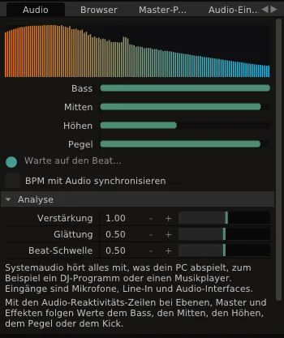
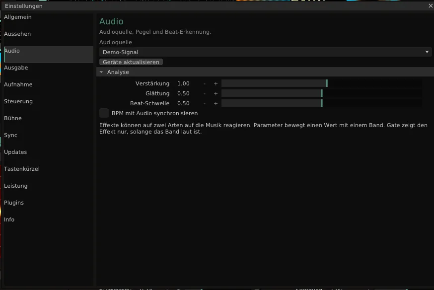

Inhalt
Erste Schritte
- Willkommen bei NyrexVJ
- Installation und erster Start
- Das Fenster im Überblick
- Deine erste Show in fünf Minuten
Visuals spielen
- Das Clip-Raster
- Decks und Übergänge
- Layer und Mischmodi
- Das Clip-Fenster
- Effekte
- Die Bibliothek
- Presets und Sitzungen
- Das Master-Fenster
Musik und Bewegung
Eigene Inhalte
- Video- und Bild-Clips
- Deine eigenen Shader
- 3D-Modelle
- Der Clip Creator
- Der Node-Effekt-Editor
- Live-Quellen: Spout, NDI und Kameras
Ausgabe und Aufnahme
Live-Steuerung und Shows
- Steuerung: MIDI, OSC und die Webseite
- Show-Sync und Timecode
- Die Show-Zeitleiste
- Bühne: DMX, VRSL und VRChat
- Plugins
Nachschlagen und Hilfe
Handbuch / Musik und Bewegung
Audio und Musik
#Eine Quelle wählen
Öffne den Tab Audio im Browser, oder Einstellungen, Audio, oder das Menü Audio.
| Quelle | Worauf sie hört |
|---|---|
| Systemaudio | Alles, was dein Computer abspielt, zum Beispiel Rekordbox, Serato, Spotify oder ein Browser. Unter Linux ist das Systemaudio (Standardausgabe) und jede Monitor-Quelle von PulseAudio oder PipeWire |
| Eingang | Ein Mikrofon oder ein Line-In. Unter Linux der Standardeingang und jede andere PulseAudio- oder PipeWire-Quelle |
| Demo-Signal | Ein eingebauter Beat, damit du Looks ohne Musik bauen kannst |
| Aus | Nichts. Clips und Effekte folgen stattdessen dem BPM-Takt |
Der Tab zeigt das Live-Spektrum, die Anzeigen für Bass, Mitten, Höhen und Pegel, die Beat-Erkennung und ein erkanntes Tempo. Liefert das gewählte Gerät einige Sekunden lang keinen Ton, sagen das der Tab und die Statusleiste und schlagen vor, etwas abzuspielen oder eine andere Quelle zu wählen.


#Analyse-Einstellungen
Verstärkung hebt oder senkt den Pegel, den die Analyse sieht, Glättung macht die Bänder ruhiger, und Beat-Schwelle bestimmt, wie leicht ein Beat gefunden wird. Du findest sie im Tab Audio und unter Einstellungen, Audio. Wenn die Anzeigen dauernd oben anschlagen, senk die Verstärkung, und wenn in jedem Geräusch ein Beat gefunden wird, senk die Empfindlichkeit.
Erkanntes Tempo zeigt die Schätzung, und Verwenden übernimmt sie als Tempo. BPM mit Audio synchronisieren hält das Tempo dauerhaft am erkannten Beat. Das klappt am besten mit Musik mit klarer Kick. Für eine gleichmäßige Show mit einem DJ ist es oft besser, das Tempo selbst zu tappen oder einer Clock zu folgen, siehe Show-Sync und Timecode.


#Visuals reagieren lassen
Die Reaktivität stellst du an drei Stellen ein:
- Das Layer-Fenster hat zwei Slots, die Deckkraft, Skalierung, Geschwindigkeit, Farbton, Helligkeit oder Sättigung mit einem Band bewegen.
- Das Master-Fenster hat dieselben Slots für das fertige Bild.
- Jeder Effekt-Slot hat ein Band und einen Modus, siehe Effekte.
Bass, Mitten, Höhen und Pegel sind die Stärke dieser Teile des Spektrums von 0 bis 1, Kick ist ein kurzer Puls auf den Bass-Beats. Nimm Bass für langsames Atmen, Kick für Schläge, Höhen für Funkeln.
Manche Clips zeichnen den echten Ton: Bars, Equalizer, Spectrum Circle, Oscilloscope, Spectrum Warp und der Effekt Oscilloscope zeigen das echte Spektrum oder die echte Wellenform. Ohne Audioquelle laufen sie auf einem virtuellen Beat, der dem BPM folgt.
Fehler gefunden oder etwas vergessen? Sag es uns auf GitHub. Dasselbe Handbuch steckt im Programm, du hast es also auch ohne Internet. Öffne es mit F1 oder über das Menü Hilfe, Handbuch.